Using Maven, Eclipse and JBoss Tools
This tutorial explains how to use the Eclipse IDE and JBoss Tools with a Mavenized Seam project.
Shortcuts
The shortcuts are listed here so we don't have to type the tedious file paths over and over again in this document.
${JBOSS_HOME}- refers to Jboss installation folder, e.g. C:\servers\jboss-4.2.3.GA${JBOSS_CONFIG}- refers to the configuration directory e.g. C:\servers\jboss-4.2.3.GA\default${JBOSS_DEPLOY}- refers to the JBoss deploy folder, e.g. C:\servers\jboss-4.2.3.GA\default\deploy${PROJECT}- the project root folder, i.e. seam-maven-refimpl${SEAM_REFIMPL}- the folder where the reference project, i.e. seam-refimpl, is installed on your computer${SEAM_TUTORIAL}- the folder where the tutorial project, i.e. seam-tutorial, is installed on your computer
Download and install software:
- jdk-1.5 or jdk-1.6
- Eclipse Ganymede 3.4 (with WTP installed)
-
Maven 2.0.9 or later.
Note: Do not use Maven 2.1.0, it has a serious bug regarding the use ofprofiles.xml, see the${PROJECT}/doc/maven-2.1.0-bugfolder for an explanation - Maven Eclipse plugin (0.9.8 or later)
- SubClipse-1.6.x, Team Provider plug-in providing support for Subversion within the Eclipse IDE .
- JBoss Seam 2.2.0.GA source code (for JBoss Tools)
- JBoss Tools 3
- Jboss 4.2.3.GA Application Server or later
- TestNG
Configure the Workspace
-
Create an empty workspace folder, e.g.
C:/dev/ide/workspaces/eclipse-3.4
Note: Do not add Maven projects under your workspace folder. There are some issues regarding use of the m2eclipse plugin when projects are placed under the workspace folder, e.g.C:/dev/ide/workspaces/eclipse-3.4/myproject: You will not be able to run Maven Eclipse goals from a command shell if your project is placed under the workspace folder; themvn eclipse:eclipse, mvn eclipse:clean and mvn eclipse:m2eclipsegoals will fail to execute. The issues are reported here: http://jira.codehaus.org/browse/MECLIPSE-571, and here: http://jira.codehaus.org/browse/MNG-2057. So, be kind to yourself and create a project folder that is not on the same file path as the workspace folder, e.g.C:/dev/projects -
Start Eclipse and select the newly created workspace folder.

Make sure that Eclipse is running on a JDK and not a JRE.
-
Select
Window>Preferencesand browse to theJava>Installed JREssection.

Configure The Maven Eclipse Plugin
- Install the Maven Eclipse plugin.
- Configure the Maven Eclipse plugin. 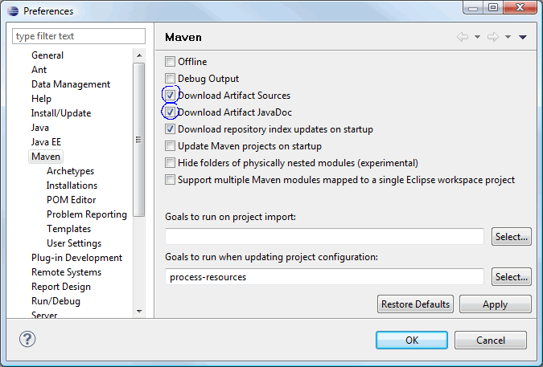
-
Configure Eclipse to use an external Maven installation.
According to this blogs: ECLIPSE: MAVEN INSTALL FROM RUN AS MENU FAILS and Common Issues and Workarounds While Building EAR files in Eclipse, there are some issues when running embedded Maven from Eclipse, so we need to configure Eclipse to use an external Maven installation. In Preferences, navigate toMaven>Installationsand edit details as outlined in the image below.
Install the JBoss Application Server and JBoss Tools
- Install the Jboss Application Server
- Install JBoss Tools 3
- The JBoss Seam documentation explains these steps in detail.
Create a WTP Server Reference
After the Server and the tools are installed you need to define a WTP server reference. The screenshots below outlines the steps needed to configure a WTP server reference for JBoss 4.2.3.
-
In Preferences, navigate to Server>Runtime Environments. Click
Add.... Browse to the folder named JBoss Community
and select JBoss 4.2 Runtime.

-
Click Next, name the server runtime, e.g. JBoss 4.2.3-jdk6 Runtime, and point the
Home Directory to the folder where you installed the server. Select the
default configuration.

-
Click Next, name the server, e.g. JBoss 4.2.3-jdk6 Server, and click
Finish.

- Exit Preferences and switch to the JBoss perspective.
- Doubleclick on the newly created server, JBoss 4.2.3-jdk6 Server, to open the Server Overview editor. 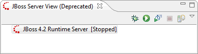
-
Verify that the
Use the JBoss deploy folderradio button is checked.
- Start the server to check that everyting is configured correctly. 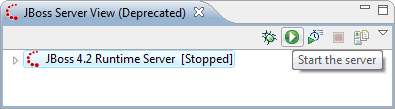
-
The console output should look something like the screeshot below.

- Stop the server.
Set editors to UTF-8 (optional)
- Make shure that all files are saved with UTF-8 encoding. This is only essential if you are
working with i18n.

 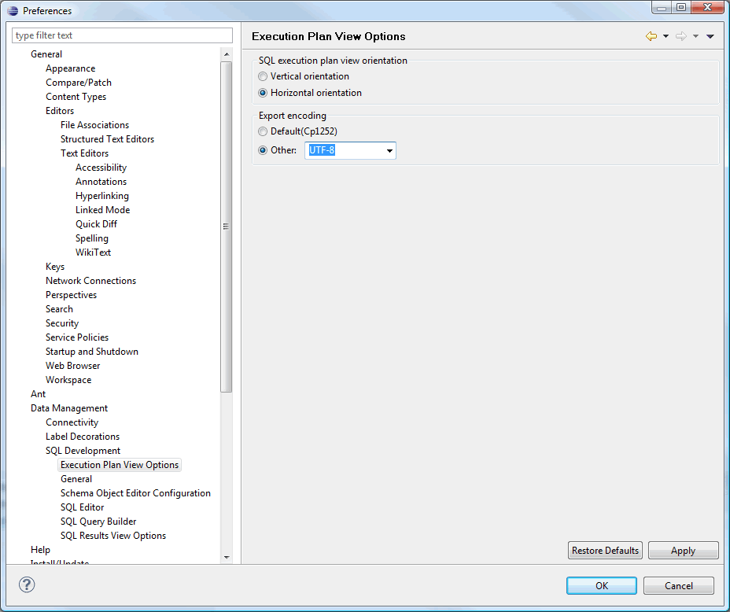
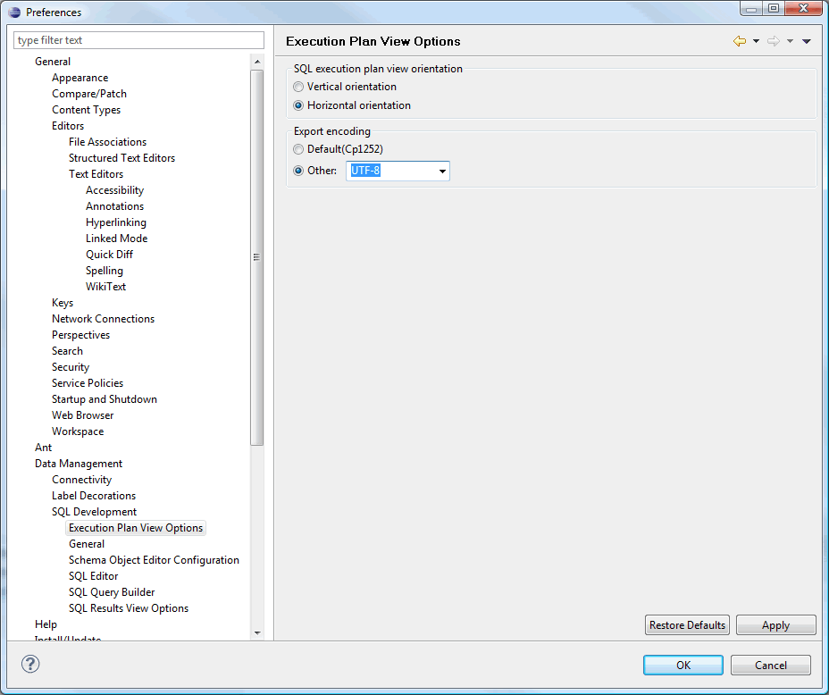


This ends the steps needed to prepare the Eclipse workspace for Maven and JBoss Tools. You need to go trough this steps every time you create a new workspace.
Import a Mavenized Seam Project into Eclipse
m2eclipse provides three options for importing a Maven project into Eclipse including:
- Import an existing Maven project from the local file sysytem
- Check out a Maven project from SCM
- Materialize a Maven project
The options are described in detail in Maven: The Definitive Guide. This tutorial shows how to use the first option.
Import An Existing Maven Project From the Local File System Into Eclipse
m2eclipse can import a Maven project with an existing pom.xml. By pointing at the directory where a Maven project is located, m2eclipse detects all the Maven POMs in the project and provides a hierarchical list of them.
-
Export the
seam-refimplproject from svn to a folder of your choice, the${SEAM_TUTORIAL}folder.
- Modify the POMs as needed.
-
Switch to development mode.
Remember to copy${SEAM_TUTORIAL}/config/profiles/profiles.xmlto the project folder,${SEAM_TUTORIAL}. Modify the copy as needed; configure database connection, point the server to the correct deploy folder (theas.deployproperty inprofiles.xmlshould correspond with theconfigurationfolder you selected for the WTP server), etc. - Make shure that the maven-eclipse plugin is configured so that no extra code is generated during the import.
-
Import the project: In Eclipse select
File>Importto import the project:
-
Select
General>Maven Projectsand click Next.
-
Browse to the folder where the project is located, select it, verify that all modules are checked
and click Finish.

-
You will notice a build error in the Maven console after the import:

Build errors for seam-tutorial-ear; org.apache.maven.lifecycle.LifecycleExecutionException: Invalid or missing parameters: [Mojo parameter [name: 'outputDirectory'; alias: 'null'], Mojo parameter [name: 'resources'; alias: 'null']] for mojo: org.apache.maven.plugins:maven-resources-plugin:2.3:copy-resources
The build fail is caused by a conflict in Maven resolution and Workspace resolution as reported here: Execution goals bound to the process-resources phase cause error
We fix :-) -
Modify Maven properties for the parent project, seam-tutotrial.

 NOTE: DO NOT CHECK THE INCLUDE MODULES CHECKBOX - EVER!
Doing so will effectly block the possibility to use WTP to deploy your project. The selection is
irreversible and you will have to remove the project from Eclipse, delete all Eclipse spesific
settings in the project folders and set up the project from scratch. See the section
How To Completly Remove Eclipse Spesific Settings From a
Project for how to completly remove Eclipse spesific settings from a project.
NOTE: DO NOT CHECK THE INCLUDE MODULES CHECKBOX - EVER!
Doing so will effectly block the possibility to use WTP to deploy your project. The selection is
irreversible and you will have to remove the project from Eclipse, delete all Eclipse spesific
settings in the project folders and set up the project from scratch. See the section
How To Completly Remove Eclipse Spesific Settings From a
Project for how to completly remove Eclipse spesific settings from a project.
-
Modify Maven properties for ear module; seam-tutotrial-ear. Uncheck the
Skip Maven compiler plugincheckbox:
-
Modify Maven properties for ejb and war modules; seam-tutotrial-ejb and seam-tutotrial-war:

Now we have fixed and the build errors should be gone :-))
Project Facets for EAR, EJB and WAR Modules
It should not be necessary to make any changes to the Project Facets, just verify that the facets are selected excactly as shown in the screenshots below. If they are not, then you should delete the project from Eclipse, Completly Remove Eclipse Spesific Settings From the Project and then import the project all over again.
- EAR.

- EJB.

- WAR.

Create Maven Run Configurations
-
Create Maven
install -Pexplodeand a Mavenclean -Punexploderun configurations:
Theinstallgoal with theexplodeprofile is needed to do an initial deploy to the server and also to fix some WTP issues (more on that later). It is also reported that the Maven install goal does not work properly from Eclipse. You should read this blog and follow the screenshots there and here to fix the problem. Below is the screenshot for the Maven
Below is the screenshot for the Maven install -Pexploderun configuration. Also create a run configuration for the Mavenclean -Punexplodegoal. Remenber to use the external Maven Runtime you configured for the workspace. Running the goal should give the following output:
Running the goal should give the following output:
You can run the goal(s) as needed by right clicking on the parent project and selectRun As > Maven buildfrom the menu.
-
Start the server and verify that the deployment works:
A successful deploy should look like this in the Console log:

- Open a browser and point the URL to http://localhost:8080/seam-tutorial
- Stop the server.
The Edit Compile Deploy Cycle
To have an effective development environment we need to automate the edit compile deploy cycle.
You can either use WTP to deploy your project or you can define a Maven builder that
hooks in to the process-classes goal. For the latter, the seam-refimpl POMs has alredy
defined an explode profile for the Maven process-classes goal. All you need to do is to
define a Maven builder that utilizes this profile on the process-classes goal.
WTP
This section explains how to use WTP to deploy your project.
-
Open the JBoss Server View and add project to server.
Ad theseam-tutorial.earproject and click Finish. 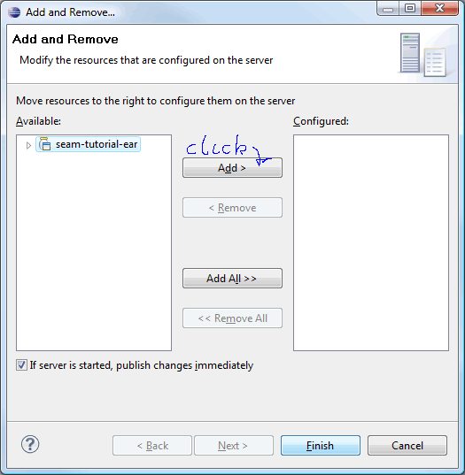 -
Publish.
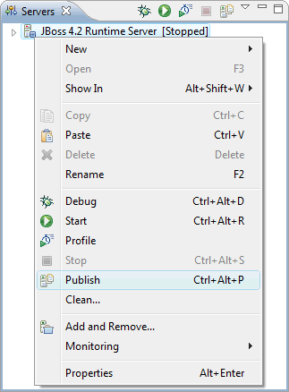 -
Start the server and check the console output.
You will notice that the application failed to deploy:
12:48:30,813 INFO [EARDeployer] Init J2EE application: file:/C:/dev/server/jboss-4.2.3.GA-jdk6/server/default/deploy/seam-tutorial-ear.ear/ 12:48:30,814 ERROR [MainDeployer] Could not initialise deployment: file:/C:/dev/server/jboss-4.2.3.GA-jdk6/server/default/deploy/seam-tutorial-ear.ear/ org.jboss.deployment.DeploymentException: No META-INF/application.xml found at org.jboss.deployment.EARDeployer.init(EARDeployer.java:146) at org.jboss.deployment.MainDeployer.init(MainDeployer.java:872) at org.jboss.deployment.MainDeployer.deploy(MainDeployer.java:809) .... at org.jboss.Main$1.run(Main.java:508) at java.lang.Thread.run(Thread.java:619) 12:48:30,818 ERROR [URLDeploymentScanner] Incomplete Deployment listing: --- Incompletely deployed packages --- org.jboss.deployment.DeploymentInfo@716583c1 { url=file:/C:/dev/server/jboss-4.2.3.GA-jdk6/server/default/deploy/seam-tutorial-ear.ear/ } deployer: org.jboss.deployment.EARDeployer@1b7edd3 status: null state: FAILED watch: file:/C:/dev/server/jboss-4.2.3.GA-jdk6/server/default/deploy/seam-tutorial-ear.ear/ altDD: null lastDeployed: 1253443710814 lastModified: 1253443587024 mbeans: -
Stop the server and inspect the deploy folder. As you can see, the deploy folder contains a copy
of the WEB-INF folder from the WAR module and a couple of jar files that shouldn't be there.
Also the
*-ds.xmlfile is missing. The problem is caused by this Eclipse bug: Bug 247090 - User)libraries incorrectly deployed within EARs 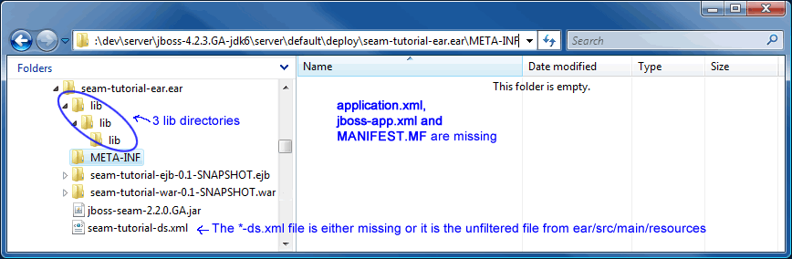 -
Select the parent project and run
mvn install -Pexplodeto fix the incorrect deploy.

-
Inspect the deploy folder and verify the the incorrectly deployed files are gone and that the
*-ds.xmlfile is present. 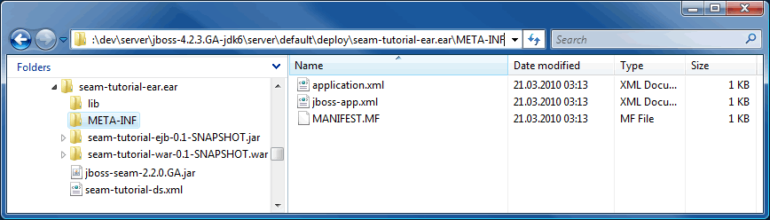 -
Start the server (in debug mode) and check the console output.
.... 13:54:43,514 INFO [EARDeployer] Started J2EE application: file:/C:/dev/server/jboss-4.2.3.GA-jdk6/server/default/deploy/seam-tutorial-ear.ear/ 13:54:43,562 INFO [Http11Protocol] Starting Coyote HTTP/1.1 on http-localhost%2F127.0.0.1-8080 13:54:43,571 INFO [AjpProtocol] Starting Coyote AJP/1.3 on ajp-localhost%2F127.0.0.1-8009 13:54:43,576 INFO [Server] JBoss (MX MicroKernel) [4.2.3.GA (build: SVNTag=JBoss_4_2_3_GA date=200807181439)] Started in 14s:340ms
- You can check that the WTP works by changing some xhtml and java files. The changes should be reflected immediately on the server (after WTP has done a publish). But as you probably know; not all changes to Java code are hot deployable even in debug mode. If hot code replacement is important to you (and it should be) then get a copy of JRebel from ZERO TURNAROUND.
-
You need to keep an eye on the deploy folder as WTP will do a full deploy from time to time, in
particular when you make modifications to the EAR module. Then the fix is to stop the server and
run
mvn install -Pexplodeagain. -
Important: The child pom's
<relativePath>tag must point to the parent pom. If it don't, the child pom will pick up the parent pom from your local .m2 repo and will be missing profiles and property values activated trough the parent pom'sprofiles.xml.<parent> <groupId>no.knowit.seam</groupId> <artifactId>seam-refimpl</artifactId> <version>1.0-SNAPSHOT</version> <relativePath>../pom.xml</relativePath> </parent>
Maven Builder
As an alternative to WTP you can create a Maven builder that hooks in to the
process-classes goal. The Maven builder will then take care of the incremental
deployment. In combination with the mvn install -Pexplode
goal you will have a complete compile- build- deploy environment without WTP.
-
Configure the Maven Builder.
The Maven builder executes theexplodeprofile on theprocess-classesgoal. The child poms will "inherit" this builder, so you only need to define the builder on the parent project.
 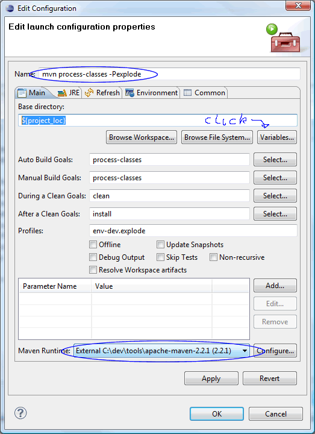
Note: Experiment with the
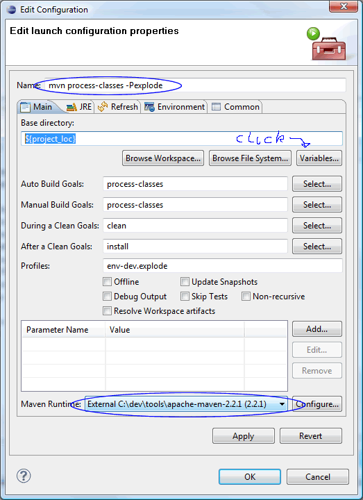
Note: Experiment with the Base directoryvariable. If you use the${project_loc}variable then the builder will run only on the sub project that contains the modified file - resulting in a faster build cycle.
-
Run
mvn install -Pexplodeto do an initial deploy.
-
Test the Builder:
Open a java class, e.g.Authenticator.java. Modify the source, save and check the console output: - As you probably know; not all changes to Java code are hot deployable even in debug mode. If hot code replacement is important to you (and it should be) then get a copy of JRebel from ZERO TURNAROUND.
-
Important: The child pom's
<relativePath>tag must point to the parent pom. If it don't, the child pom will pick up the parent pom from your local .m2 repo and will be missing profiles and property values activated trough the parent pom'sprofiles.xml.<parent> <groupId>no.knowit.seam</groupId> <artifactId>seam-refimpl</artifactId> <version>1.0-SNAPSHOT</version> <relativePath>../pom.xml</relativePath> </parent>
Don't Kill One Bird with Two Stones
Choose either to add the project to the WTP server or define a Maven builder.
JBoss Tools
JBoss Tools is a perfect match for Seam devolpers using Maven and the Elipse IDE. It helps you with a a lot of tasks you otherwise would have used hours and days to complete. The Tools is not essential for developing a Mavenized Seam application, but it provides a collection of tools that help you generate code and develop in an incremental manner. The JBossTools project hosts a variety of standalone Eclipse plug-ins that support Java EE development. You can use the tools to do reverse engeneering: If you have an existing database then the Tools can generate a full CRUD application with entities, Seam framework classes (home- and list classes) and a user interface with navigation and drilldown. If you use the Tools to create an entity class then the Tools will automatically generate the corresponding Seam framework classes and userinterface (list and a detail page).
JBoss tools is a Eclipse feature, that can be enabled on a project by adding some configuration (JSF and Seam facets, the SeamBuilder and SeamNature) to the Eclipse project. JBoss Tools will manage two projects: the WAR and the EJB project, but the WAR project will be the main source of configuration. By adding the necessary items to the maven-eclipse-plugin configuration for this project and also adding a special Seam configuration file to the .settings directory, JBoss tools will recognize the project correctly. For some reason, JBoss tools also stores some configuration in the workspace configuration. This can not be configured from the Maven Archetype and thus the JBoss Tools configuration is not complete. Because of this, the link between the WAR and EJB project will not be found by JBoss Tools from the EJB project. When a new Seam Artifact (Action, Entity, Form or Conversation) is added from the EJB project context menu, the configurations made in the WAR project are not picked up. When adding from the WAR project they are picked up and some sources will also be written in the EJB projects, as required (source: Configuring a Seam EJB project for development with Maven and JBoss Tools ).
If you really want to learn the mecanisms behind Seam, then it is definitively worth the effort setting up the tools. Play with the tools and study the code that the various tools generates.
Configure JBoss Tools For The Workspace
Unpack JBoss Seam to a folder of your
choice, e.g. C:/ide/libs/jboss-seam-2.2.0.GA. Open Prefereneces
and follow the screenshots.
-
JSF:

-
Seam runtime:
 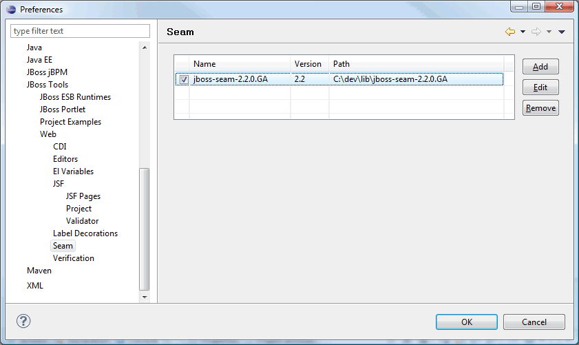
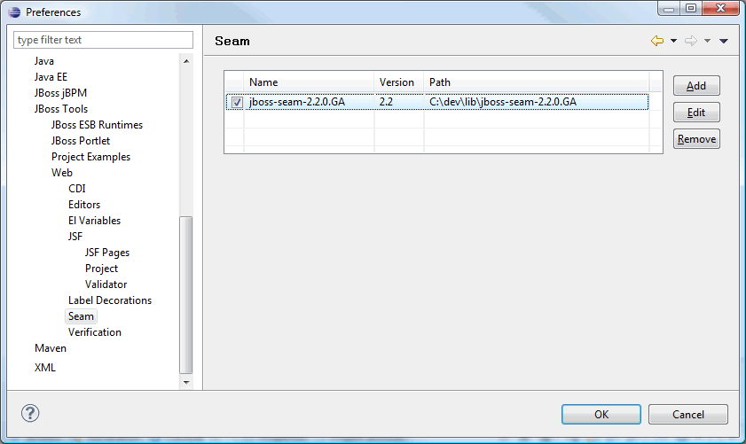
Configure JBoss Tools For a Project
JBoss Tools will manage two projects: the WAR and the EJB project. The WAR project will be the main source of configuration, so we'll start with the WAR.
-
The WAR module:
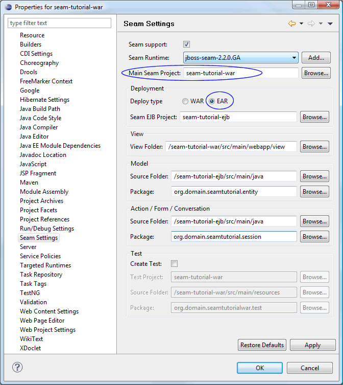


-
The EJB module:

-
The EAR module:
Should not be necessary to do anything here in connection with the Tools. Use default values. -
The parent module:
Should not be necessary to do anything here in connection with the Tools. Use default values. - That's it. You're now ready to play with the tools :-)
Play With The JBoss Tools
In this section we'll play with the tools.
Create an Entity Bean the Seam Way
-
Configure
profiles.xml:<profilesXml> <profiles> . . <!-- MySql5 --> <profile> <id>ds-mysql5</id> . <ds.database.name>refimpl_db</ds.database.name> . </profile> . <!-- jboss-4.2.3 --> <profile> <id>as-jboss423</id> . <as.home>C:/dev/server/jboss-4.2.3.GA-jdk6</as.home> <as.deploy>${as.home}/server/default/deploy</as.deploy> . </profile> . <!-- development environment --> <profile> <id>env-dev</id> . <env.hibernate.hbm2ddl.auto>update</env.hibernate.hbm2ddl.auto> . </profile> </profiles> <activeProfiles> <activeProfile>env-dev</activeProfile> <activeProfile>ds-mysql5</activeProfile> <activeProfile>as-jboss423</activeProfile> </activeProfiles> </profilesXml> - Open Seam perspective.
-
In Package Explorer, right click on the war or ejb project and
select
New>Seam Entity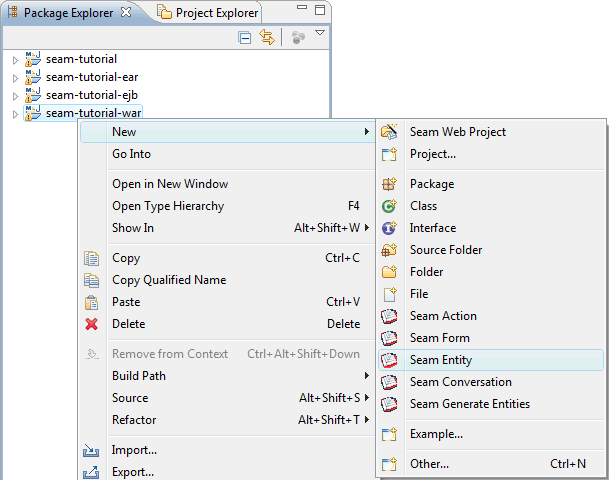 -
Fill in the Seam entity class name, e.g.
MyEntity, and click Finish
.

-
Generated code:
All this code in less than ten seconds! :-))
MyEntity.javaMyEntityHome.javaMyEntityList.javamyEntityList.xhtmlmyEntity.xhtml -
We're almost there. We configured Seam Settings to generate
xhtmlfiles to thewebapp/viewfolder, but the code generator does not take this into account. The links in the generatedxhtmlcode "assumes" that the code is generated to thewebappfolder. So, to finish up, we fix this flaw by making some small changes to the genereatedxhtmlcode. Also add a link tomyEntityList.xhtmlinmenu.xhtml(see the blue text).-
myEntityList.xhtml<!DOCTYPE composition PUBLIC "-//W3C//DTD XHTML 1.0 Transitional//EN" "http://www.w3.org/TR/xhtml1/DTD/xhtml1-transitional.dtd"> <ui:composition xmlns="http://www.w3.org/1999/xhtml" xmlns:s="http://jboss.com/products/seam/taglib" xmlns:ui="http://java.sun.com/jsf/facelets" xmlns:f="http://java.sun.com/jsf/core" xmlns:h="http://java.sun.com/jsf/html" xmlns:rich="http://richfaces.org/rich" template="/layout/template.xhtml"> <ui:define name="body"> <rich:panel> <f:facet name="header">myEntityList</f:facet> <div class="results"> <h:outputText value="No myEntity exists" rendered="#{empty myEntityList.resultList}"/> <h:dataTable id="myEntityList" var="myEntity" value="#{myEntityList.resultList}" rendered="#{not empty myEntityList.resultList}"> <h:column> <f:facet name="header">Id</f:facet> #{myEntity.id} </h:column> <h:column> <f:facet name="header">Name</f:facet> <s:link id="myEntity" value="#{myEntity.name}" propagation="none" view="/view/myEntity.xhtml"> <f:param name="myEntityId" value="#{myEntity.id}"/> </s:link> </h:column> </h:dataTable> </div> </rich:panel> <div class="actionButtons"> <s:button id="done" value="Create myEntity" view="/view/myEntity.xhtml"/> </div> </ui:define> </ui:composition> -
myEntity.xhtml<!DOCTYPE composition PUBLIC "-//W3C//DTD XHTML 1.0 Transitional//EN" "http://www.w3.org/TR/xhtml1/DTD/xhtml1-transitional.dtd"> <ui:composition xmlns="http://www.w3.org/1999/xhtml" xmlns:s="http://jboss.com/products/seam/taglib" xmlns:ui="http://java.sun.com/jsf/facelets" xmlns:f="http://java.sun.com/jsf/core" xmlns:h="http://java.sun.com/jsf/html" xmlns:rich="http://richfaces.org/rich" template="/layout/template.xhtml"> <ui:define name="body"> <h:form id="myEntityForm"> <rich:panel> <f:facet name="header">myEntity</f:facet> <s:decorate id="nameField" template="/layout/edit.xhtml"> <ui:define name="label">Name</ui:define> <h:inputText id="name" required="true" value="#{myEntityHome.instance.name}"/> </s:decorate> <div style="clear:both"/> </rich:panel> <div class="actionButtons"> <h:commandButton id="save" value="Save" action="#{myEntityHome.persist}" rendered="#{!myEntityHome.managed}"/> <h:commandButton id="update" value="Save" action="#{myEntityHome.update}" rendered="#{myEntityHome.managed}"/> <h:commandButton id="delete" value="Delete" action="#{myEntityHome.remove}" immediate="true" rendered="#{myEntityHome.managed}"/> <s:button propagation="end" id="cancel" value="Cancel" view="/view/myEntityList.xhtml"/> </div> </h:form> </ui:define> </ui:composition> -
menu.xhtml<rich:toolBar xmlns="http://www.w3.org/1999/xhtml" xmlns:ui="http://java.sun.com/jsf/facelets" xmlns:h="http://java.sun.com/jsf/html" xmlns:f="http://java.sun.com/jsf/core" xmlns:s="http://jboss.com/products/seam/taglib" xmlns:rich="http://richfaces.org/rich"> <rich:toolBarGroup> <h:outputText value="#{projectName}:"/> <s:link view="/home.xhtml" value="Home" propagation="none"/> </rich:toolBarGroup> <!-- @newMenuItem@ --> <s:link view="/view/example/userList.xhtml" value="User List" includePageParams="false" propagation="none"/> <s:link view="/view/myEntityList.xhtml" value="myEntity List" includePageParams="false" propagation="none"/> <rich:toolBarGroup location="right"> <h:outputText value="signed in as: #{identity.username}" rendered="#{identity.loggedIn}"/> <s:link view="/login.xhtml" value="Login" rendered="#{not identity.loggedIn}" propagation="none"/> <s:link view="/home.xhtml" action="#{identity.logout}" value="Logout" rendered="#{identity.loggedIn}" propagation="none"/> </rich:toolBarGroup> </rich:toolBar>
-
-
That's it! Run
mvn install -Pexplodeto do an initial deploy, start server and point your browser to http://localhost:8080/seam-tutorial/
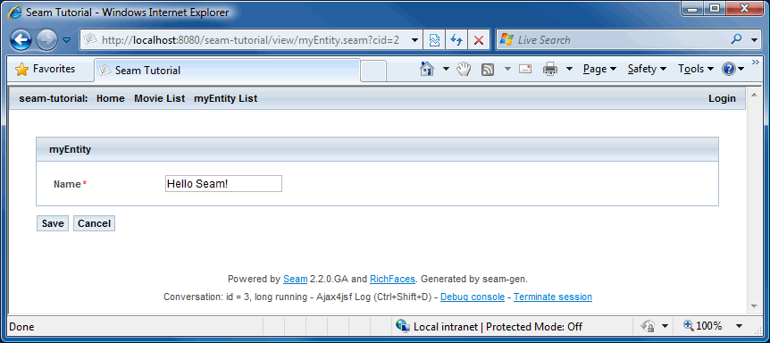
Reverse Engeneering - Done in 60 Seconds!
Well, the tutorial is not done in 60 seconds, but the revrese engeneering is.
We will re-use the project from the previous section, so complete that tutorial first.
Configure Database
-
Checkout or export the sql scripts
open18-initial-schema-mysql.sqlandopen18-initial-seed-data-mysql.sqlfrom svn, http://seam-maven-refimpl.googlecode.com/svn/trunk/samples/seaminaction/etc/schema/. -
Open e.g. MySQL Query Browser and create schema
refimpl_db. -
Open script,
open18-initial-schema-mysql.sqland click execute.
 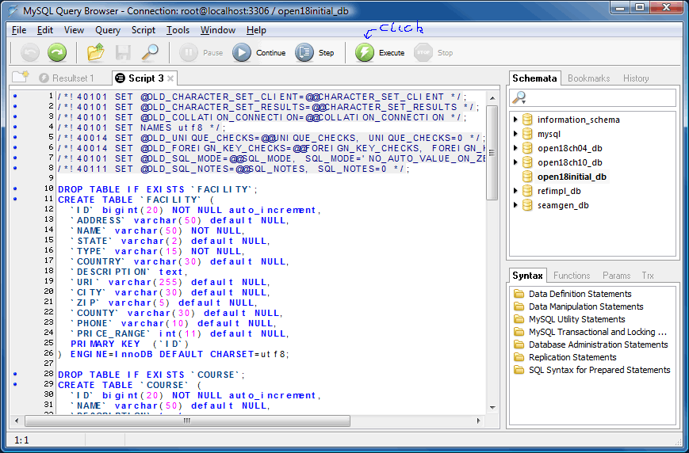
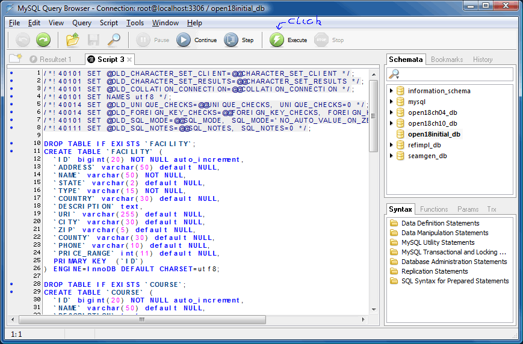
-
Open script,
open18-initial-seed-data-mysql.sqland click execute.
Create and Configure Database Connection
-
Open the Database Development perspective.

-
Create a new Database Connection.


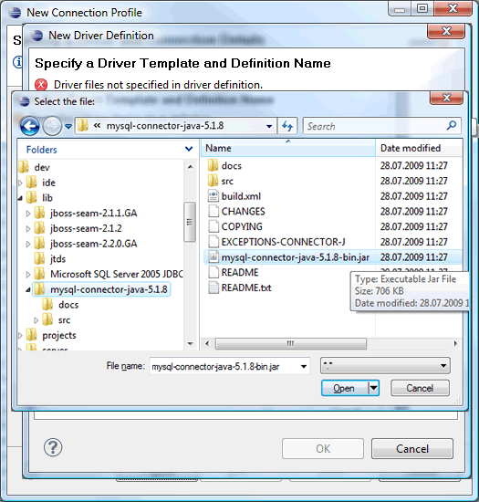
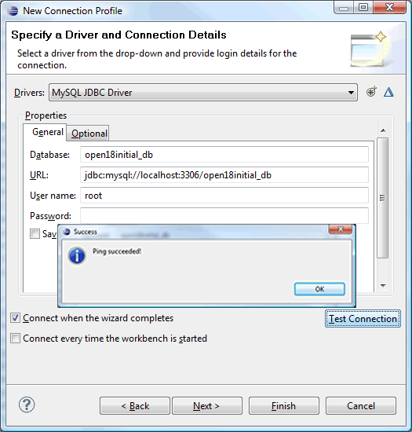
Add Hibernate Configuration
-
Open the Hibernate perspective.

-
Right click inside explorer and select
Add Configuration... -
Add the newly created connection and define a Database dialect.


Modify project
- Open the Seam perspective.
-
Modify the
seam-tutorialproject.-
In
seam-tutorial-ejb; delete all packages except for theorg.jboss.seam.example.actionpackage. -
In
seam-tutorial-war; delete theviewfolder.

-
In
-
Modify
menu.xhtml.<rich:toolBar xmlns="http://www.w3.org/1999/xhtml" xmlns:ui="http://java.sun.com/jsf/facelets" xmlns:h="http://java.sun.com/jsf/html" xmlns:f="http://java.sun.com/jsf/core" xmlns:s="http://jboss.com/products/seam/taglib" xmlns:rich="http://richfaces.org/rich"> <rich:toolBarGroup> <h:outputText value="#{projectName}:"/> <s:link id="menuHomeId" view="/home.xhtml" value="Home" propagation="none"/> </rich:toolBarGroup> <!-- @newMenuItem@ --> <rich:toolBarGroup location="right"> <h:outputText id="menuWelcomeId" value="signed in as: #{credentials.username}" rendered="#{identity.loggedIn}" /> <s:link id="menuLoginId" view="/login.xhtml" value="Login" rendered="#{not identity.loggedIn}" propagation="none" /> <s:link id="menuLogoutId" view="/home.xhtml" action="#{identity.logout}" value="Logout" rendered="#{identity.loggedIn}" propagation="none" /> </rich:toolBarGroup> </rich:toolBar> - Modify Seam settings for WAR: Select the newly created connection and point the View folder to /seam-tutorial-war/src/main/webapp so that xhtml files are generated to the webapp folder. 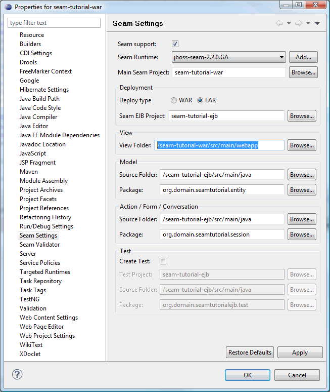
-
Modify Seam settings for EJB.

-
For some reason the reverse engeneering tool need a clean compiled project to do the reverse
engeneering, so run e.g.
mvn clean packageon the parent project.
Generate Entities From Existing Database
- Open the Seam perspective. In Package Explorer, right click on the war or ejb project and select
-
Now, sit back and watch the magic happen.
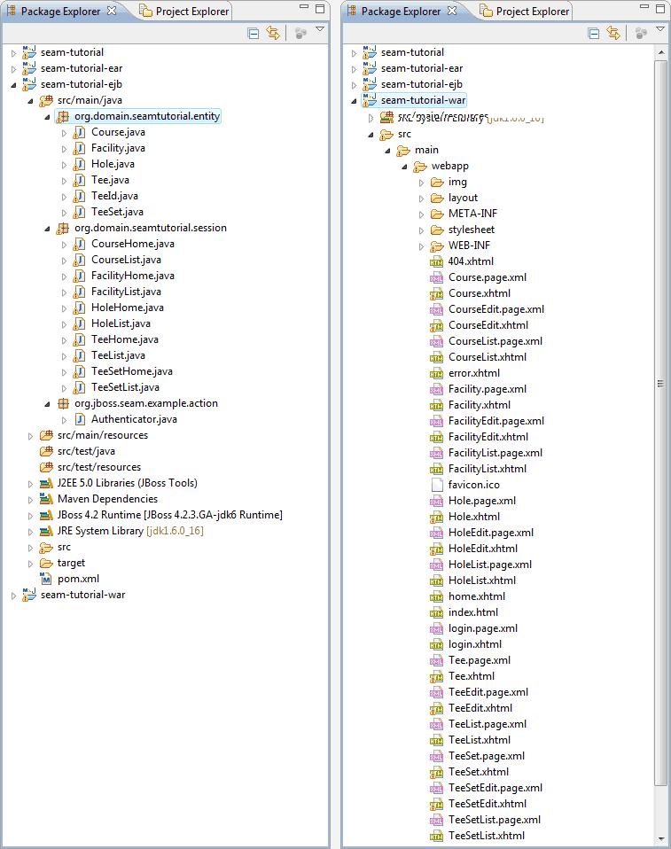
-
Run
mvn install -Pexplode, start server and point your browser to http://localhost:8080/seam-tutorial/
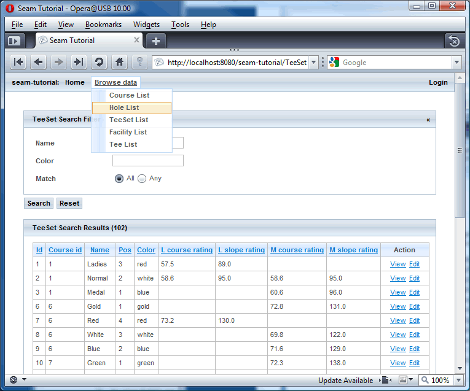
- A full enterprise CRUD application with basic security generated, deployed and up an running in about 60 seconds. That's impressing!
-
As you browse trough the pages you will find that that the
TeeListpage fails to load. The problem is desctibed here: http://seam-maven-refimpl.googlecode.com/svn/trunk/samples/seaminaction/stages/projects-ch04/chapter-developments.txt. A solution is found here: http://seam-maven-refimpl.googlecode.com/svn/trunk/samples/seaminaction/stages/projects-ch05/chapter-developments.txt.
New>Seam Generate Entities

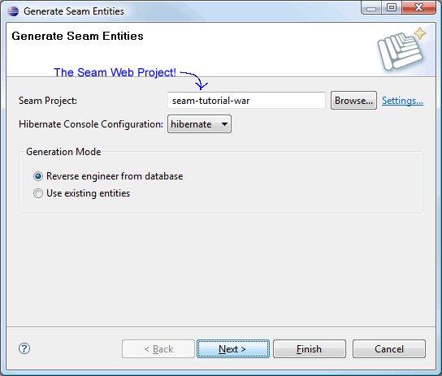
How To's
How To Checkout Trunk From Eclipse
-
In Eclipse select
File>Importto import the trunk:
-
Select
Checkout Projects from SVNand click Next. - Select an existing repository location and click Next.
- Select the folder to be checked out from SVN and click Next.
-
Select
Check out as a project in the workspaceand click Next. 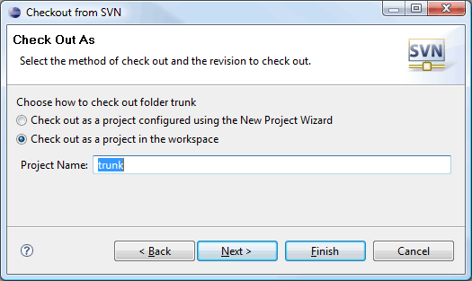 -
Uncheck the
Use default workspace locationcheckbox and browse to the folder where you want to check out the trunk.
Note: Do not add Maven projects under your workspace folder.
Click Finish.
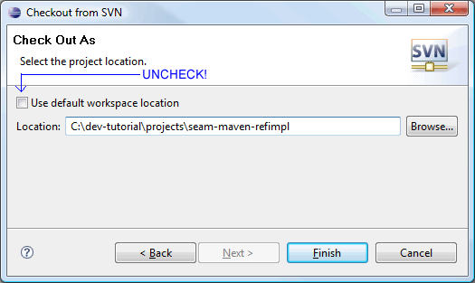 -
You should now have access to the complete trunk from Eclipse.

How To Configure the maven-eclipse Plugin "Correctly" For An Existing Project
Configure the maven-eclipse plugin so that no extra code is generated during the import.
Open the pom that contains your <pluginManagement> section (your root pom or
parent pom) and locate the maven-eclipse-plugin. The configuration should be like the
listing below:
<pluginManagement>
<plugins>
.
.
<plugin>
<groupId>org.apache.maven.plugins</groupId>
<artifactId>maven-eclipse-plugin</artifactId>
<version>2.7</version>
<configuration>
<downloadSources>true</downloadSources>
<downloadJavadocs>true</downloadJavadocs>
<addVersionToProjectName>false</addVersionToProjectName>
<projectNameTemplate>[artifactId]</projectNameTemplate>
<wtpmanifest>false</wtpmanifest>
<wtpapplicationxml>false</wtpapplicationxml>
<wtpversion>2.0</wtpversion>
</configuration>
</plugin>
.
.
</plugins>
</pluginManagement>
How To Download Sources and Javadocs for Maven Dependencies
The m2eclipse plugin seems to be a bit unpredictable when it comes to downloading
sourcecode and javadocs for the projects dependencies. If you find that source code and javadocs are
missing for some dependencies, then try this:
-
Navigate to the project folder, e.g.
${SEAM_TUTORIAL}, using a command shell and execute: -
mvn eclipse:eclipse -DdownloadSources=true -DdownloadJavadocs=true
How To Completly Remove Eclipse Spesific Settings From a Project
If you find yourself in a situation where your Eclipse project has reached a limbo, then you are faced with two options: Delete the project from your local file system or try to clean up the mess caused by Eclipse (and you?).
Steps required to clean up Eclipse mess:
- Delete the project from Eclipse.
-
Exit Eclipse, navigate to the projct folder, e.g. the
${SEAM_TUTORIAL}folder using a command shell and execute maven commands:mvn clean -Punexplodemvn eclipse:clean
-
The
mvn eclipse:cleangoal delets most of the Eclipse spesific project files, but not all of them. We need to clean up the remaining dot files ourselves: Browse all project folders refered in the<modules>section of the parent pom and delete all dot files that belongs to Eclipse, e.g.- .classpath
- .project
- .settings/
- appClientModule/
- .externalToolBuilders/
- *.launch
- .metadata/
-
Execute maven commands:
mvn install -Pexplodemvn eclipse:m2eclipse
.project,.classpathand WTP files that now makes the project a valid Eclipse project. - Open Eclipse and import the project.
How To Solve: Access restriction: The type Xyz is not accessible due to restriction on required library rt.jar
See: access restriction problems
How To Solve: Build path contains duplicate entry: 'org.eclipse.jst.j2ee.internal.module.container' for project
See: Build path contains duplicate entry: 'org.eclipse.jst.j2ee.internal.module.container'
How To Solve: The Maven 2.0.2 XML parser fails to parse a UTF-8 POM that begins with the optional byte-order mark
Do not add Maven projects under your workspace folder. There are some issues regarding use of the
m2eclipse plugin when projects are placed under the workspace folder, e.g.
C:/dev/ide/workspaces/eclipse-3.4/myproject: You will not be
able to run Maven Eclipse goals from a command shell if your project is placed under the workspace
folder; the mvn eclipse:eclipse, mvn eclipse:clean and mvn eclipse:m2eclipse goals will
fail to execute. The issues are reported here:
http://jira.codehaus.org/browse/MECLIPSE-571, and here:
http://jira.codehaus.org/browse/MNG-2057.
So, be kind to yourself and create a project folder that is not on the same file path as the
workspace folder, e.g. C:/dev/projects
How To Browse (ctrl+clik) Into Java Code From a Visual Editor
The WAR pom must list all Java modules you want to browse into:
<dependencies>
<!-- project -->
<!--
For Eclipse and JBoss Tools:
List all modules you are interested to browse (ctrl+click) into from xhtml pages
-->
<dependency>
<groupId>${project.groupId}</groupId>
<artifactId>${app.context}-ejb</artifactId>
<type>ejb</type>
<scope>provided</scope>
</dependency>
<!-- seam -->
<dependency>
<groupId>org.jboss.seam</groupId>
<artifactId>jboss-seam-ui</artifactId>
</dependency>
.
.
</dependencies>
How To Get JBoss Tools To Work In Vista 64 bit
It only works partially! It seems that everything except for the visual editors (VPE) works fine. You will see the following message in the visual editor: "The VPE editor can't be run because your system environment needs to be changed slightly. Find out more". The link points to a page with no information regarding how to fix this for Vista64 with Jdk-6 64 bit and Eclipse-3.4 64 bit. You will also find that you are not able to browse into java code from the visual editor, which for me is the most essential feature of the VPE. The only workaround I have found so far is to download and install 32 bit versions of Jdk-6 and Eclipse-3.4 and install the required plugins in the Eclipse-3.4 32 bit environment. The visual editors works as expected with the 32 bit configuration.
After installation of Jdk-6 32 bit and Eclipse-3.4 32 bit, ensure that Eclipse uses the "correct"
jdk. Open the eclipse.ini file and add path to the 32 bit Jdk version as emphasized in
text below:
-vm C:/Program Files (x86)/Java/jdk1.6.0_16/bin -showsplash org.eclipse.platform --launcher.XXMaxPermSize 512M -framework plugins\org.eclipse.osgi_3.4.3.R34x_v20081215-1030.jar -vmargs -Dosgi.requiredJavaVersion=1.5 -Xms128m -Xmx512m
Useful Links
- WTP + M2eclipse + Seam : Maven works !
- Configuring a Seam EJB project for development with Maven and JBoss Tools
- Seam, EJB's and EAR-packaging in Maven
- Common Issues and Workarounds While Building EAR files in Eclipse
- Integration with WTP
- Introduction to m2eclipse